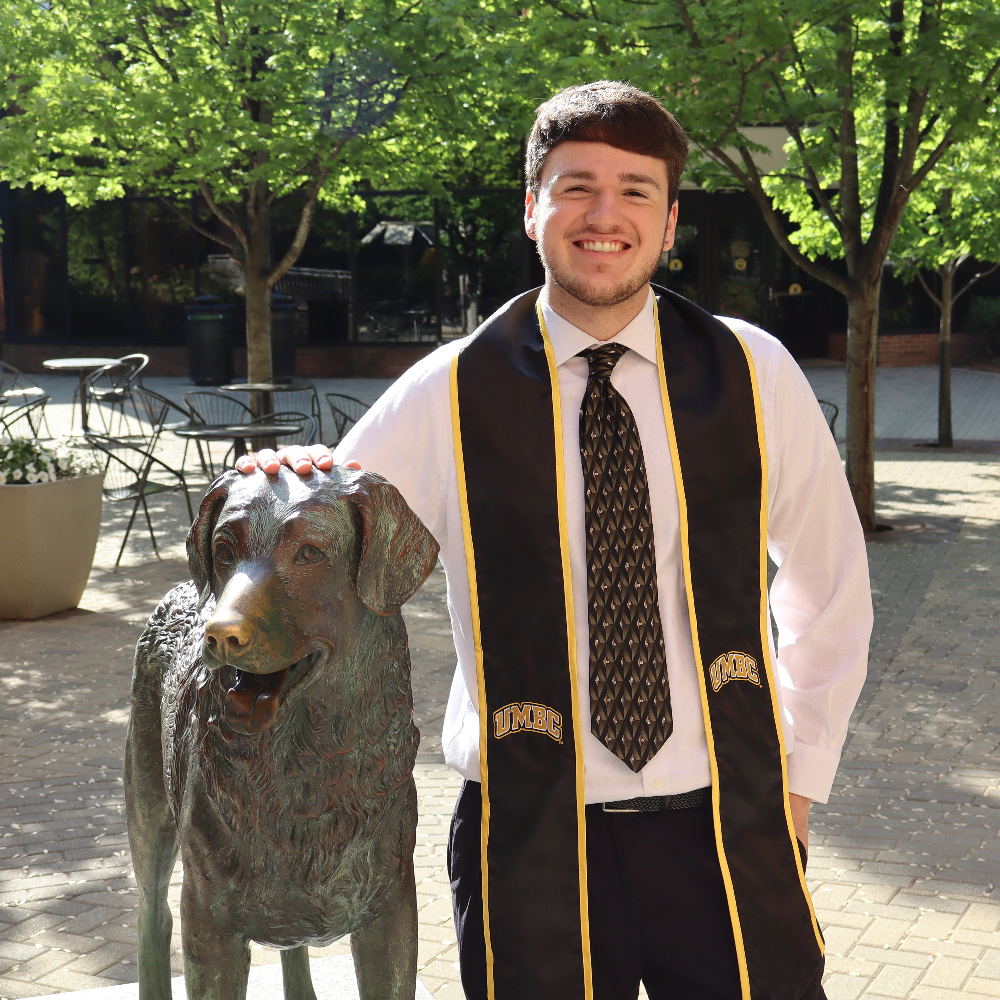

Hello world! My name is Shayne, and I am a recent graduate at the University of Maryland, Baltimore County (UMBC). On May 21st, 2026 I achieved my Bachelor's of Science in Computer Science, with a focus in Cybersecurity. Go DAWGS! My areas of interest are primarily in cryptography and software development.
Growing up, I've always been fascinated by technology. Everything from looks, features, usability, and even the circuitry. My family deemed me as the "IT guy" very quickly due to my constant curiousity. Many of my projects include game controller shell swaps, soldering new components, self-hosting services, and configuring and maintaining networks.
My current self-hosted services I use are:

With Dr. Yiwen Hu as my supervisor, this position is my first time seeing what goes on in the research scene. I am astonished with the freedom that researchers have, and I have grown an appreciation towards those who have contributed to papers on their studies! Below are some skills I've learned during this time:
Also be sure to check out Dr. Hu's website! You can find me under the E-WiNS Lab section! https://yiwenhu556.github.io/
While this wasn't a job directly in the field of Computer Science, I was able to learn more about IT devices, network configurations, and Virtual Reality (VR) equipment used for entertainment purposes! Here's what I learned:
CryptoHack is an online CTF-based course for multiple cryptography topics, such as modular arithmetic, symmetric cryptography, public-key cryptography, and elliptic curves. I chose to dive into this for my independent study course in my last semester, and I loved it! Unfortunately, I do not have a styling to present them neatly yet. However, here is a direct link to them, written within Obsidian notes, which supports Markdown and LaTeX formatting!